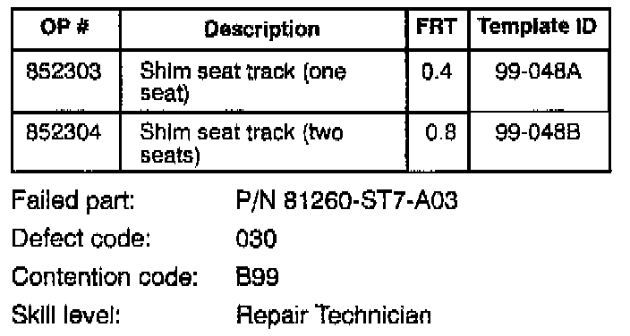
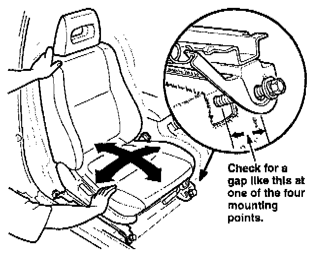
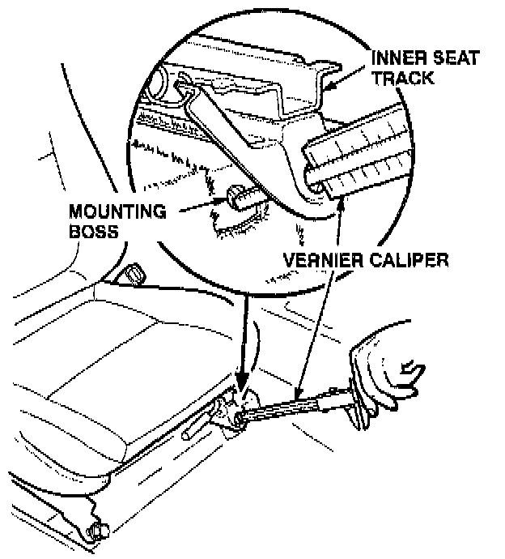
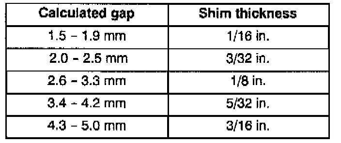
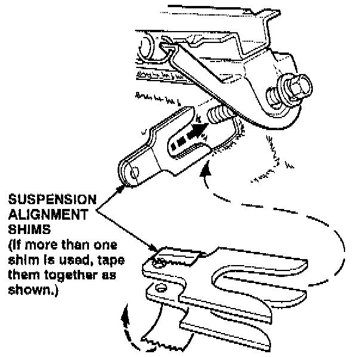

Front Seat - Hard To Adjust
99-048November 29, 1999
1994 - 00 Integra - ALL
Front Seat(s) Are Hard to Adjust
SYMPTOM
The driver and/or passenger front seat is difficult to adjust forward and backward.
PROBABLE CAUSE
The inner or outer seat track is not in alignment.
CORRECTIVE ACTION
Shim the seat track.

WARRANTY CLAIM INFORMATION
In warranty:
The normal warranty applies.
Out of warranty:
Any repair performed after warranty expiration may be eligible for goodwill consideration by the District Technical Manager or your Zone Office. You must request consideration, and get a decision, before starting work.
REPAIR PROCEDURE
1. Remove the seat track end covers.
2. Adjust the seat forward or backward to the approximate mid-point of the seat track travel.
3. Sit in the seat, and move it backward and forward, making sure both seat tracks are latched.
4. Loosen all four mounting bolts several turns.

5. Wiggle the seat backward and forward and side to side until you see a gap at one of the four mounting points.
6. Tighten the other three mounting bolts until they are snug, then remove the mounting bolt from the mounting point with the gap.

7. Use a vernier caliper to measure the mounting point gap you noticed in step 5.

8. Subtract 2.5 mm from the gap measurement to allow for the thickness of the seat track. Select the proper suspension alignment shim(s) to take up the measured gap. Do not exceed 5 mm.
NOTE:
Alignment shim thickness is normally measured in fractions of an inch. Use this table to select the proper shim thickness.

9. Reinstall the mounting bolt, placing the shim(s) over the mounting bolt between the seat track and the mounting boss. Position the shim(s) to prevent poor appearance.
10. Torque all four seat track mounting bolts to 34 Nm (25 lb-ft).
11. Check the operation of the seat, making sure it slides smoothly and releases easily.
12. Reinstall the seat track end covers.
13. Repeat steps 1 through 12 for the other front seat if needed.

Disclaimer